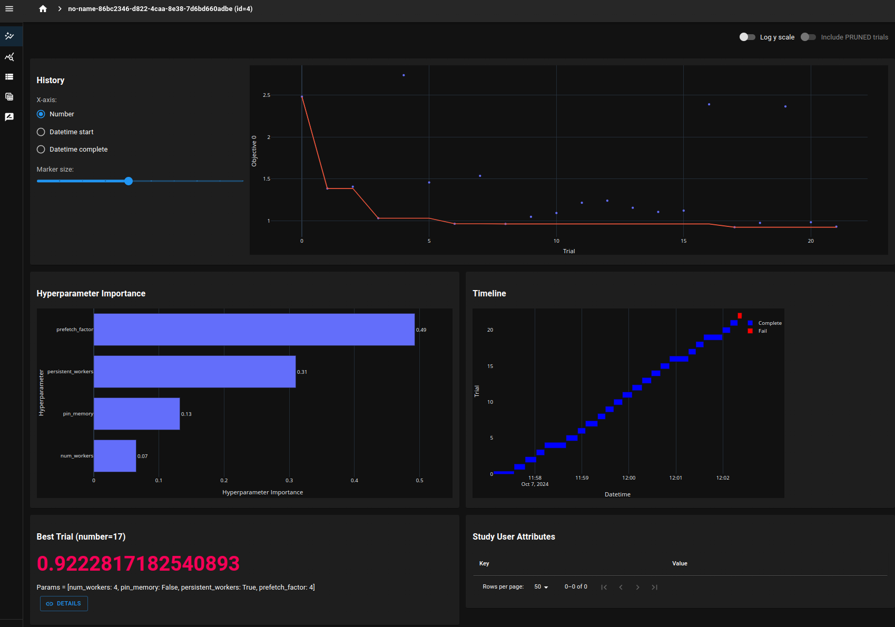

🔍 Parameter Sweeping
For parameter sweeps, py-gen-ml generates a Pydantic base model that replaces the types in the original config with structures that allow for defining the sampling space for each parameter.
The sweep config is then passed to a py_gen_ml.OptunaSampler which will sample the parameter space and return a patch that can be applied to a base config.
Your training code shouldn't have to be changed for a parameter sweep. It will receive the modified config as input and can remain oblivious to the fact that it has been sampled from a larger space.
🧪 Defining a parameter sweep
Let's do a benchmark on how to iterate throug a torch.utils.data.DataLoader as fast as possible.
🔧 The schema
We will define a simple schema with some parameter that influence the dataloader.
// dataloader.proto
syntax = "proto3";
package dataloader;
import "py_gen_ml/extensions.proto";
// DataLoader configuration
message DataLoaderConfig {
option (pgml.cli).enable = true;
// Batch size
int32 batch_size = 1;
// Number of workers
int32 num_workers = 2;
// Pin memory
bool pin_memory = 3;
// Persistent workers
bool persistent_workers = 4;
// Prefetch factor
int32 prefetch_factor = 5;
}
When we run py-gen-ml it will generate a Pydantic model for parameter sweeps for us.
import typing
import py_gen_ml as pgml
from . import dataloader_patch as patch
from . import dataloader_base as base
class DataLoaderConfigSweep(pgml.Sweeper[patch.DataLoaderConfigPatch]):
"""DataLoader configuration"""
batch_size: typing.Optional[pgml.IntSweep] = None
"""Batch size"""
num_workers: typing.Optional[pgml.IntSweep] = None
"""Number of workers"""
pin_memory: typing.Optional[pgml.BoolSweep] = None
"""Pin memory"""
persistent_workers: typing.Optional[pgml.BoolSweep] = None
"""Persistent workers"""
prefetch_factor: typing.Optional[pgml.IntSweep] = None
"""Prefetch factor"""
DataLoaderConfigSweepField = typing.Union[
DataLoaderConfigSweep,
pgml.NestedChoice[DataLoaderConfigSweep, patch.DataLoaderConfigPatch], # type: ignore
]
You can see that it replaced the types in the original config with structures that allow for defining the sampling space for each parameter. The pgml.IntSweep type allows for several sampling strategies:
- Uniform sampling: sample uniformly from a range by specifying
low,highand optionallystep. - Discrete sampling: sample from a list of discrete values by specifying
options.
The pgml.BoolSweep type allows for sampling from a boolean space.
⚾ The base config
To run a benchmark we need a base config. Any sweeps will be applied to the base config by overlaying the sampled parameters.
The default YAML config is given below:
✍️ The script
We will load this config in the following script:
- Line 3: the path to the config can be passed as a CLI option
- Line 7: we parse the config file
- line 9, 10: if there is no sweep file given, we run a benchmark on the base config
🛠️ The sweep config
Next, we'll define a minimalistic sweep config to sweep over the batch size.
In the run function we load this sweep config and set a few things related to Optuna.
- Line 4: add a CLI option for the sweep config
- Line 13: load the sweep config
- Line 15-18: define the objective function. This is the function that will be optimized. It takes a
trialobject, samples the parameters for the dataloader and returns the result of the benchmark. - Line 20: create a new study
- Line 21: run the study for a given amount of trials
We can now run the sweep with the following command:
python sweep_dataloader.py \
--config_paths \
configs/base/default.yaml \
--sweep_paths \
configs/sweep/batch_size.yaml \
--num_trials 2
You will see something like the following:
[I 2024-10-07 11:10:54,448] A new study created in RDB with name: no-name-724460b6-177e-4750-b046-15627aad8711
Files already downloaded and verified
Time taken: 1.173576545715332
[I 2024-10-07 11:11:07,083] Trial 0 finished with value: 1.173576545715332 and parameters: {'batch_size': 64}. Best is trial 0 with value: 1.173576545715332.
Files already downloaded and verified
Time taken: 1.3076978921890259
[I 2024-10-07 11:11:21,024] Trial 1 finished with value: 1.3076978921890259 and parameters: {'batch_size': 32}. Best is trial 0 with value: 1.173576545715332.
Best value: 1.173576545715332 (params: {'batch_size': 64})
💻 Benchmark
The code that actually runs the benchmark is the following:
⏳ Full sweep
A more elaborate sweep can be configured as follows:
# yaml-language-server: $schema=schemas/data_loader_config.json
batch_size: 64
num_workers:
options:
- 1
- 2
- 4
persistent_workers: any
pin_memory: any
prefetch_factor:
options:
- 1
- 2
- 4
We'll keep the batch size fixed at 64 and sweep over the other parameters.
python sweep_dataloader.py \
--config_paths \
configs/base/default.yaml \
--sweep_paths \
configs/sweep/full.yaml \
--num_trials 20
After running this for a while, open up Optuna dashboard to see the results:
It will show you a web interface to inspect the results. Here's what it looks like:

You can then quickly see the optimal set of parameters in the bottom left corner.
🤸♂️ Sweep type reference
Below, we give an overview of how field types map to the different options for sweep sampling strategies.
🏗️ Built-in types
1️⃣ pgml.IntSweep
For an int field, pgml.IntSweep will offer the following sampling strategies:
- Uniform sampling:
low,highand optionallystepmust be set. - Discrete sampling:
optionsmust be set. - Fixed: just provide an int
Imagine we have the following schema:
For example, this allows you to create the following YAML structures:
⛵ pgml.FloatSweep
For a float field, pgml.FloatSweep will offer the following sampling strategies:
- Uniform sampling:
low,highand optionallystepmust be set. - Log uniform sampling:
log_low,log_highmust be set. - Discrete sampling:
optionsmust be set. - Fixed: just provide a float
Imagine we have the following schema:
This allows you to create the following YAML structures:
✅ pgml.BoolSweep
For a bool field, pgml.BoolSweep will offer the following sampling strategies:
- Any: use a string
"any". This samples from bothTrueandFalse. - Fixed: just provide a bool
Imagine we have the following schema:
This allows us to create any of the following YAML files:
⛓️ pgml.StringSweep
For a string field, pgml.StringSweep will offer the following sampling strategies:
- Choice: provide a list of strings to choose from
- Fixed: just provide a string
Imagine we have the following schema:
This allows us to create any of the following YAML files:
🧱 Custom types
🐣 Nested configs
With nested configs, the ways to sweep are slightly different. Let's say we have the following schema:
For the config_field we have the following strategies:
- Sweep: just provide one sweep for the
config_field - Nested sweep: provide several sweeps for the
config_field
This allows us to create any of the following YAML files:
config_field:
nested_options:
first:
int_field:
low: 1
high: 10
step: 1
second:
int_field:
options:
- 1
- 2
- 3
For the nested sweep, we'll sample categorically between first and second. We then sample uniformly between 1 and 10 for the int_field in case of first and choose from 1, 2 or 3 for the int_field in case of second.
🔠 Enums
For an enum field, py-gen-ml generates a type that enables the following sampling strategies:
- Choice: provide a list of enums to choose
- Any: use a string
"any". This samples from all the enum values. - Fixed: just provide an enum
Imagine we have the following schema:
This allows us to create any of the following YAML files: